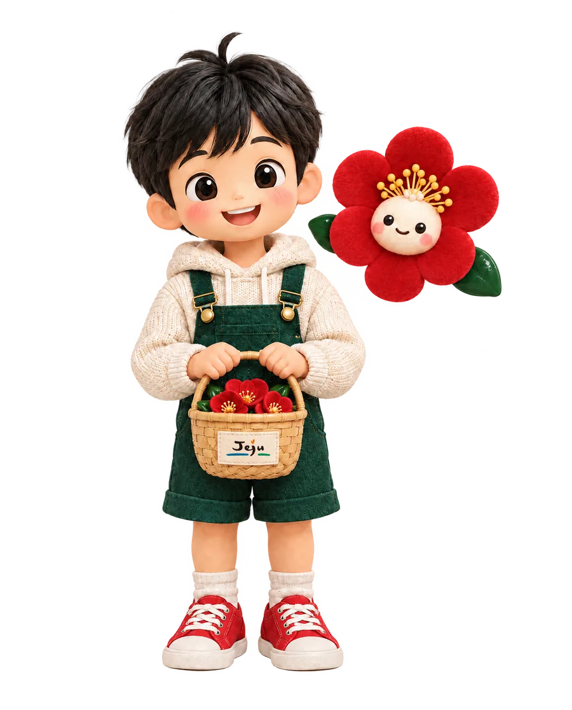
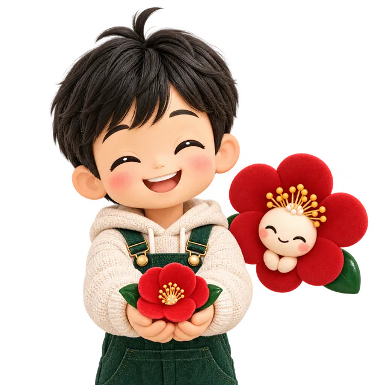
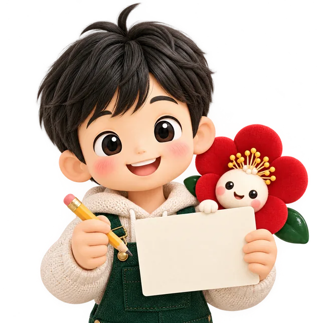
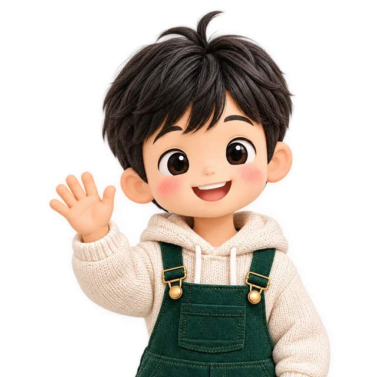

하영이
오늘의 대한민국 아이'하영'은 제주어로 '많이'라는 뜻이에요. 더 많은 국민의 마음이 모이길 바라는 이름입니다. 동백 바구니를 들고 여러분의 생각을 모아 제80주년까지 전합니다.
2026. 11. 16 시작
국민과 함께 시작하는 제주4·3 80주년
2028년은 제주4·3 제80주년입니다. 제80주년이 어떤 의미가 되어야 할지, 기념사업은 어디에 힘을 실어야 할지 국민 여러분께 묻습니다.
혼저옵서예! 생각을 들려줄래요?

의견수렴 취지
제주4·3 제80주년은 지난 역사를 돌아보는 데 그치지 않고, 오늘날 우리 사회에 어떤 의미를 남기고 앞으로 무엇을 이어가야 할지 함께 생각하는 해입니다.
제주4·3은 1947년부터 1954년까지 이어진 역사적 사건으로, 무력충돌과 진압 과정에서 많은 도민이 희생되었으며 오랜 시간 진상규명과 희생자 명예회복을 위한 노력이 이어져 왔습니다.
이번 설문은 제80주년의 의미와 가치, 기념사업의 추진 방향 등에 대한 국민 여러분의 소중한 의견을 모아 기념사업을 준비하고, 나아가 제주4·3의 미래 방향을 모색하는 데 활용하고자 합니다. 국민 여러분의 소중한 의견을 부탁드립니다.
제주4·3 알아보기
제주4·3을 잘 몰라도 괜찮습니다. 아래 세 가지만 읽으면 설문에 참여할 수 있습니다.
1947년 3월 1일의 사건을 기점으로, 1948년 4월 3일 발생한 무장봉기와 이후 1954년 9월 21일까지 제주에서 이어진 무력충돌과 진압 과정에서 많은 주민이 희생된 역사적 사건입니다.
2000년 제주4·3특별법이 제정되었으며, 2003년 정부의 진상조사보고서가 확정되고 대통령의 공식 사과가 이루어졌습니다. 이후 희생자 추념일 국가기념일 지정, 희생자 보상, 유해 발굴과 신원 확인 등 진상규명과 명예회복을 위한 노력이 이어지고 있습니다. 2025년에는 제주4·3 기록물 14,673건이 유네스코 세계기록유산에 등재되어 제주4·3의 역사적 가치와 기억을 국제사회와 공유하는 계기가 되었습니다.
제주4·3은 과거의 아픔을 기억하고 평화와 인권, 화해와 상생의 가치를 되새기는 역사입니다. 제80주년을 앞두고 국민 여러분의 의견을 모아 국민이 바라는 80주년의 모습과 함께 만들어 갈 기념사업의 방향을 모색하고자 합니다.
3·1절 기념대회 발포 사건. 제주4·3의 기점이 됩니다.
무장봉기가 일어나고, 이어진 무력충돌과 진압 과정에서 많은 주민이 희생됩니다.
한라산 금족 지역이 전면 개방되며 7년 7개월의 사건이 끝납니다.
제주4·3특별법이 제정됩니다.
정부 진상조사보고서가 확정되고 대통령이 공식 사과합니다.
제주4·3이 국가기념일(법정 명칭 「4·3희생자 추념일」)로 지정됩니다.
제주4·3 기록물 14,673건이 유네스코 세계기록유산에 등재됩니다.
제주4·3 제80주년.
국민 의견수렴 설문
회원가입 없이 참여합니다. 객관식 다섯 문항은 가장 중요하다고 생각하는 항목을 하나씩 고르고, 마지막 자유 의견은 원하는 분만 적습니다.

국민 여러분의 의견을 소중히 살펴 제주4·3 제80주년 기념사업의 추진 방향을 모색하는 데 활용하겠습니다.
시연판에서는 응답이 서버에 저장되지 않습니다.
제주4·3이 처음이라면 제주4·3 알아보기를 먼저 읽어 주세요.
참여 방법
제주4·3의 역사적 배경과 진상규명·명예회복 과정, 이번 의견수렴의 취지를 먼저 읽습니다.
객관식 다섯 문항에 하나씩 답하고, 제80주년에 바라는 점이 있으면 자유롭게 적습니다.
더 구체적인 사업 아이디어는 국민생각함에서도 받습니다. 국민생각함 바로가기 ↗


결과 활용
문항별 응답과 자유 의견을 분석해 국민의 관심과 요구를 파악하고, 그 결과를 제80주년 기념사업에 반영합니다.
온라인 설문과 국민생각함 제안을 함께 받습니다.
문항별 응답과 자유 의견을 분석합니다.
제80주년 기념사업 추진위원회와 결과를 공유하고 추진 방향에 반영합니다.
캐릭터 소개
'하영'은 제주어로 '많이'라는 뜻이에요. 더 많은 국민의 마음이 모이길 바라는 이름입니다. 동백 바구니를 들고 여러분의 생각을 모아 제80주년까지 전합니다.
동백은 제주4·3 희생자를 기리는 상징 꽃입니다. 추운 겨울에도 피어나는 토종 홑동백처럼, 80년의 기억이 다음 세대로 이어지길 바라는 마음을 담았어요.
아이와 꽃이 늘 함께 다니는 이유 — 제주4·3의 기억(동백)이 오늘의 세대(하영이)와 함께 걸어갈 때, 역사는 국민 모두의 것이 됩니다.
묻고 답하기
전 국민 누구나 참여할 수 있습니다. 회원가입이나 본인인증은 필요 없습니다.
네. 설문에 앞서 제주4·3의 역사적 배경과 진상규명·명예회복 과정을 간략히 소개합니다. '제주4·3 알아보기'를 읽고 참여해 주세요.
객관식 5문항과 선택형 주관식 1문항입니다. 객관식은 문항마다 가장 중요하다고 생각하는 항목 하나를 고르고, 주관식은 적지 않아도 됩니다.
문항별 응답과 자유 의견을 분석해 제80주년 기념사업 추진위원회와 공유하고, 기념사업 추진 방향에 반영합니다.
국민권익위원회가 운영하는 국민 정책참여 플랫폼입니다. 이번 의견수렴은 온라인 설문과 국민생각함 제안을 함께 받습니다.
설문 응답은 이름이나 연락처 없이 받습니다. 자유 의견을 적은 분이 동백 배지 선정 안내를 원할 때만 휴대전화 번호를 선택해 적으며, 배지 발송이 끝나면 바로 파기합니다.